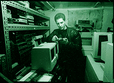

It all started with a confused message on my machine: "He's got Bionic Man reel-to-reel tape units five feet tall with a SCSI-1 interface! Want to set your watch? There's a GPS clock over the TV satellite phone in the back, battlefield perimeter alarms, X-ray machines, phone switches, blargaahhh..." This message was just one of many that began pouring into DEF CON world domination headquarters not long ago, detailing a hidden outpost on the outskirts of Seattle. This outpost, known to some as Uncle Ira's Fun Farm O' Death (FOD), houses loads of cool technological gizmos and government surplus high-tech wizardry that would turn even the head of a Cult of the Dead Cow cyberninja strike force.
After learning about the Fun Farm O' Death, I quickly contacted some cohorts to obtain directions. The following is a composite of many return visits to FOD. What I found there was astounding.
THE SETTING
Just finding the farm is a tough task. Getting there means a
long ride through the peaceful farmland east of Bothell, Wash. Every
time I drive there I'm amazed by the fact that this concealed Brigadoon
of cool toys and technology exists; I can't help but laugh when I think
of how difficult it must have been to transport things like the five 7-
foot cabinets of the System 85 phone switch so far from the
nearest post office.
Picture an ordinary-looking farmhouse, perhaps slightly run-down,
that's positioned next to a barn and another smaller building. There are
several cars parked adjacent to the barn, as well as several large trucks
that appear to be used for hauling "large things." Behind one of the
buildings, there's an Inmarsat Sat Phone. On the porch of the house,
there's a USSB satellite dish. Littering the backyard are numerous
military-like transport crates, and in the pasture behind the barn there
are two horses.
UNCLE IRA: TECHNO-PIMP
The proprietor of this strange place doesn't refer to it as the Fun
Farm O' Death. Instead, it's called Meco, or Moser Electronics
Company.
Uncle Ira, a true techno-pimp, owns the farm and has been
collecting, repairing and selling data communications equipment since
1980, when he was in high school. This interest continued through his
college years, and now his sometime hobby has turned into a full-time
job. The guy is impassioned about his work--his business card even has
an RS-232 chart printed on the back--useful for when one needs to
remember that pins four and five on the modem cable are Request to
Send (RTS) and Clear to Send (CTS). Don't see the usefulness? Good.
At about six feet tall, with glasses, a clean-cut beard and a bit of a
paunch, Uncle Ira can consume more info than Liz Taylor can food at a
champagne buffet. Need to understand 16 frequency QSM? Need an
answer on how to make your passive fiber FL hub active? Who starred
in the movie Colossus: The Forbin Project? How much
money did Boeing lose trying to sell the Saudis the Peace Shield system
for air defense? Ask Ira. Even at 1 a.m., when I need to know what
version of Solaris works with a Sun 410, I ring Uncle Ira for a turbo
answer.
Apparently, Uncle Ira has customers the world over, techno-pimps
similarly crazed about data communications gear and computing odds
and ends. Just as the computer underground has its multitudinous
factions of whacked zealots, so does the world of used electronic
equipment buyers and sellers.
Some of Uncle Ira's customers have rather specific fetishes. Uncle Ira
describes one as a time freak; he just loves time and purchases every
conceivable type of clock. When Uncle Ira gets his hands on a few
atomic clocks (which use rubidium instead of cesium because it has a
more stable time base), then bam!--they're shipped off to the time freak
in, count 'em, milliseconds! Datum 9390 GPS time clocks? Pow! Off to
the time freak! Airport X-ray machines? Zammo! Off to the terrorist--
er, the guy who likes to salvage the light intensifier tubes! Over the
years, Uncle Ira has learned who will buy what and at what price.
Often, he'll just sell or trade shiny, cool-looking goods to other used
equipment dealers, as a sort of swap. Except in this instance, phone
switches are being exchanged instead of baseball cards.
THE TECHNOPIMP VS. THE MAN
When it comes to acquiring cool technological commodities, there are several resources available to the buyer: the government, industry and private parties. Obviously, most of the really cool hi-tech gear comes from the government (referred to from here on out as the man). You must remember, the man is easily confused. Because the man's policies for getting rid of cool stuff are all screwed up, it's rather easy for world-domination-hungry computer network troublemakers to get their paws on said gear. There are two main agencies from which to purchase computer-related equipment: The Department of Defense's DRMS (Defense Reutilization and Marketing Service) and the GSA (General Services Administration). The DRMS offers the buyer mostly military surplus stuff, some of it over 30 years old. The GSA manages all other non-Department of Defense government agency property, primarily computers and related office equipment.
|
 Dark Tangent with some goods |
The DRMS enforces hundreds of strange rules on what equipment must be destroyed and what can survive to see the light of another day. Unfortunately, computer and communications gear that was fine to sell two years ago has suddenly found itself tracked in databases, wrapped tightly in red tape and targeted for decommission (in other words, destroyed). The DRMS is decommissioning 25-year-old tube radios; the GSA, on the other hand, has no such regulation on old tube radios, and sells them to the public, a typical example of government contradiction. Confusing matters more about what can be bought and sold, private industry is bound by few prescripts, if any--Boeing, IBM and other large government contractors routinely rid themselves of Tempest-rated computers (heavily shielded equipment that prevents adversaries from remotely monitoring your screen) that the DRMS would otherwise destroy.
As a sidenote, the Department of Motor Vehicles has an even more ridiculous decommissioning process. Want to buy a "Humm-Vee" jeep to drive around town? Not a chance, thanks to current regulations that require Humm-Vees to be destroyed. It used to be that the outlawed vehicles merely had to be cut into two pieces to be decommissioned. But because people were welding them back together, new decommissioning laws now apply. Humm-Vees have to be: A) crushed and compacted, B) driven over by a tank or C) cut into four pieces, corner to corner, by a cutting tool that displaces no less than a half inch of material. Why, you ask? Because the Humm-Vee doesn't meet current federal safety standards: it doesn't have a padded dashboard or a "neutral" position on the gear box! To the half-wits at the DMV, it's better to spend more money crushing the vehicle with a tank than it would take to install some padding. And this is how the government operates with regard to cool computer gear.
So Uncle Ira has had to learn all of the how-tos on bidding and purchasing items he wants to adopt for the Fun Farm O' Death. Problem is, the various agencies and companies that use these auctions as trash disposals force buyers to purchase goods en masse. If you want that 386 PC with the 1 gig drive, you'll also have to buy the three pallets of printer sound hoods. The auctioneers seed one box of good stuff with 10 boxes of partially assembled wiring harnesses and pillows- -just so that they can clear out their warehouses. Some universities sell off their equipment, but take the printed manuals and operating instructions and recycle them separately. A total nightmare for Uncle Ira.
Also, buying a computer with a hard drive means taking a gamble that it even still works. No money-back guarantees. Some large companies will de-gauss the hard drives in order to wipe them of data; this also makes the drives unusable. Some places just trash the workstation drives, but don't touch the servers. And sometimes auctioneers sell tape backups with data still on them.
On the flip side, there are also times when the auctioneers' sloppiness works to Uncle Ira's advantage. He once scored a direct hit against the man when he purchased a large box of stuff that the DRMS failed to spot. They managed to crush a bunch of 30-year-old radios, but overlooked a perfectly good, one-year-old computer. Mission accomplished!
DISINTEGRATORS AND OTHER COOL DEVICES
Once Uncle Ira has scored his load of shiny stuff at an auction, he
loads it into "Mad Jesus," his pickup truck with a tail lift. And off he
goes to FOD. There, the random gear is sold, in a few days, a few
weeks, a few years. Some stuff Ira has yet to sell: techno-junk that been
residing in his barn for years, gathering dust and targeted by owl shit.
(As a frequent visitor to the farm, I've had the unfortunate occasion to
witness Ira and his 12-gauge ridding the barn of trespassing owls.)
When Uncle Ira really can't move certain goods, he counts on "The
China Man" to make a wholesale purchase of the junk. The
China Man isn't really Chinese,
but bears the nickname because the final destination of Uncle Ira's
unsellable equipment is either China or Taiwan. There, a hive of
workers dismantles the equipment into its component parts: bolts,
screws, wires, and so on. Uncle Ira sells this junk by the pound--stuff
like old frame racks and cabling guts from decommissioned medical
systems--to make room for newer junk in his barn.
What new stuff? It's impossible, even for Ira, to detail all of the cool
techno-gear he has stashed away at the farm. When I attempt to relate
the story of Ira and his funky farm to my friends and acquaintances,
they usually tune out somewhere between the part about the 20 KW
battlefield power turbines that run on JP4 or diesel, and the
disintegrators that can eat phone books and turn them into mere dust
particles. FOD is a place that the human mind isn't capable of imaging
with the aid of words alone. Seeing is believing. Even then, it's difficult
to
comprehend.
The first time I arrived at the farm, I nearly broke the bank. I wanted
the datacryptor-64 DES boxes, the fiber transceivers, the rack-mount
modems, the cool encrypted radios and the trunked 800 MHz police
radio with computer interface. In short, I was in heaven. Everywhere I
looked there was something that, with a little bit of elbow grease,
could be made workable again. Fireproof filing cabinets! Zero
aluminum briefcases! Even a military version of a System 85 phone
switch with three hours of use! A geek's fantasy come true! Remember
to breathe slowly.
HAGGLING WITH UNCLE IRA: NO EASY TASK
You've located the shiny object that you want (whether it's that DEC
server 5000 or the Microwave T1 kit). Now comes the fun part. Don't
sweat it, though! Although Uncle Ira owns vast silicon acres of stuff,
you're the one with cash in hand. And Ira wants to part you from it.
You did bring cash, didn't you?
Step One: Check out the shiny object you desire only when Uncle Ira
isn't looking. The less interested you seem in a purchase, the easier it is
to haggle with Uncle Ira. This can be tricky, so be sure to bring enough
accomplices with you to confuse and distract him. First, fire off the
secret signal that tells your cohorts to point at something and say,
"Whoa, is that a rack-mounted Apple Mac II with VME backplane, 48
Volts DC power supply and 64 serial ports?!?" Uncle Ira will wander
over and say something like, "This is an ill piece of equipment. It used
to be an alarm controller for a telephone company. Blah, blah, blah÷"
Now, get a good look at the item you want. Does it have all of its
parts? What are the serial and part numbers? Is it covered in owl poo?
Soon enough, Uncle Ira will be wondering what you're up to, so be
nimble, Jack!
Step Two: Feign indifference. Get a price. Say something like, "Just
checking out the [fill in the blank]. How much do you want for it?"
TECHNO PIMP ALERT! Never forget for even a moment that Uncle
Ira is the Techno Pimp! He'll always respond to a price query with
something like, "Umm, well, it's got these trick connectors, and I sold
one back in '95 for $xxx. So, like, maybe the cost is ($xxx - $yy) =
$zzz?" At this point you must refocus the conversation and respond,
"OK, cool. What's this thing over here?"
Step Three: Hit the Web when you get home, call the manufacturer,
find out if the shiny object is still supported or if you can receive
software or an old manual for it. If so, find out what other people are
selling it for. The next time you are at the Farm O' Death, implement
the final phase...
Step Four: "I was thinking about [fill in the blank]. I saw one for
cheaper/better condition/less owl poo. How about $zzz - $aaa? I've got
cash." If you've played your cards right, Uncle Ira will counter with,
"Ow, you break my arm! You break my arm! Cash is good." It's all
about the art of the deal. Uncle Ira loves to bargain.
Price is related to how much Uncle Ira knows about something, and
it's also directly correlated with what I like to call the "Coolness Factor"
(CF) of any given object. An example of something with a high CF
would be the Sun Sparc 10 50-1 with 128megs of RAM and other
extra goodies. This device has a high enough CF that Uncle Ira will set
an unreasonable price for it. Most likely, it will sit on his desk until it
depreciates to the price of a Happy Meal.
Also beware items with a high "luminosity." Want that terminal
server? It has so many lights that when you flick the switch, a room
still has more than ample reading light. Much luminosity! It's almost
guaranteed to be way out of your price range. It would require ninja-
like skill for anyone to pimp smack it out of Ira's possession.
In case you'd like to try:
Meco: Ira Moser, PO Box 939, Snohomish, WA 98291-0939.
E-mail: ira@gte.net
Phone: 206-788-0208
Fax: 360-794-8754